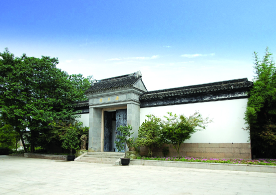

高家祠堂
嘉兴市文物保护网 · 市级文物保护单位 · 2014-06-18 · 原文

高家祠堂位于嘉兴市南湖区南湖街道烟雨社区南湖国际俱乐部内，系创办高公兴酱园的高氏家族清代所建的祠堂。祠堂面积1384平方米，通面阔19米，通进深72.85米。坐北朝南，砖木结构。共有三进厅堂，另有回廊。第一进为五开间平房，穿斗式五架梁，朝南梁枋上雕有人物和花草纹，原应为轿厅。第二进为五开间平房，抬梁和穿枋式并用，五檩，前后各双步，梁枋上雕有纹饰，地面铺设方砖。原为前厅，现放有健身器材。第三进分为东、西两部分，西侧房屋为五开间平房，抬梁和穿枋式并用，五檩，前后各单步，用四步，现为南湖国际俱乐部员工食堂。西侧房屋为三开间平房，抬梁和穿枋式并用，五檩，前后各双步。高家祠堂规模较大，保存较完整，嘉兴市区现存此类建筑已极少见，对研究当地的祭祖习俗有一定的意义。2010年公布为嘉兴市级文物保护单位。